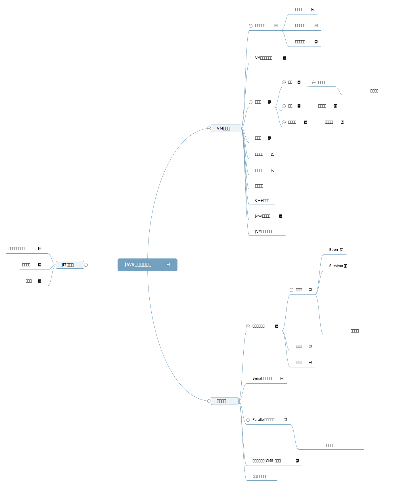

本文是对JVM 功能的简单汇总和简述，目标读者是想了解一下JVM功能
这是百度脑图编辑的本文内容要点，图后是内容简介

主要有以下3部分组成
新版本的JVM有自适应调优功能，根据硬件信息自动选择垃圾回收器，堆大小和JIT编译器的类型
VM运行时
命令行解析
功能
- 解析命令行的选项
- 配置VM
选项分类
标注选项
JVM标注要求必须实现
非标准选项
(-X前缀)不强制实现
非稳定选项
(-XX前缀)为满足特定需求，不稳定
参数示例
-XX:+AffresiveOpts
- +或-表示布尔类型的选项参数
- 后接JVM参数名字
-XX:OptName=
- JVM参数名字
- 后接=和value
VM的启动和停止
启动器执行的操作
- 解析命令行参照
- 设置堆大小和JIT编译器
- 读取，设定环境变量
- 获取Main-Class
- 创建VM线程并初始化
- 加载Main-Class
- 执行main方法
类加载
根据类名或接口名创建对象的过程，包括3个阶段
加载
- 定位并读取类的二进制流
- 若一览其他类则先加载其他类
类加载器
分支主题
链接
包括以下步骤：
- 检查类的语义，常量符号池；检验类型
- 创建静态字段并初始化为默认值
- 解析符合引用（可选）
类型安全
Java类型由类加载器和全限定名(包括包名)唯一确定
类初始化
必须先初始化父类
类元数据
在永久代中创建Class对象的JVM内部表示
解析器
使用Template Table查找对应的机器码
异常处理
通过当前方法，当前字节码，异常对象来查找异常处理器并执行
线程同步
使用monitor对象实现锁定和解锁
线程管理
C++堆管理
Java本地接口
与非Java程序进行协作
JVM致命错误处理
垃圾回收
分代垃圾收集
使用分代垃圾收集的假设
- 大多数对象生命周期短
- 生命周期长的对象很少引用生命周期短的对象
为了在Minor GC时减少扫描老年代对象来确定是否存在到新生代对象的引用的时间，使用卡表来维护老年代对象到新生代对象引用的更新，另外通过“写屏障”在更新对象引用的时候来标记卡表脏
当新生代不能满足内存分配请求时触发Minor GC，当老年代或永久代不能满足内存分配请求时触发Full GC，Full GC的过程中会收集新生代，老年代和永久代
新生代
特点：
- 空间小
- 收集频繁
- 垃圾对象多
- 垃圾收集效率高
- 一般使用复制垃圾收集法
区域划分：Eden区和一对survivor区
以下情况会导致对象过早地复制到老年代：
- 创建的对象过大，Eden容不下，直接在老年代上创建
- Micro GC时Survivor溢出，Eden和from Survivor中其余的对象会提升到老年代
Eden
新创建的对象首先在此分配空间，分配的空间使用“指针碰撞法”来确定
空间分配方法：使用线程本地分配缓冲区和指针碰撞技术来分配空间创建对象
Survivor
存放从Eden存活但不足够老的对象
收集过程
复制垃圾收集法： 先遍历并标记所有垃圾对象，然后把Eden和From Survivor中非垃圾对象拷贝到To Survivor中
老年代
特点
- 对象从新生代晋升而来
- 空间比新生代大
- 占用空间增长速度较新生代慢
- 垃圾收集效率低
- 使用卡表来标记在新生代中对象的引用
永久代
- 其实不作为垃圾收集分代层次的一部分
- 用户创建的对象不会存放在此
- 只存放VM和Java类的元数据，驻留的strings和类静态变量
Serial垃圾收集器
- 在新生代中使用复制垃圾收集法
- 在老年代中使用标记-压缩收集法
标记-压缩收集法：
- 单线程，stop-the-world
- 标记老年代中的垃圾对象，然后把非垃圾对象移动到老年代的一边，新生代晋升的对象就可以用指针碰撞技术分配空间
Parallel垃圾收集器
- 新生代和老年代中与Serial收集器的收集方法相同
- 新生代和老年代中都使用多处理器并行收集
- 目标是高吞吐率
收集方法
并行标记清除(CMS)收集器
当老年代的占用量到达某个限额时触发老年代收集；当老年代不能满足新生代提升的对象的分配请求时就溢出了，会触发一次stop-the-world压缩式的垃圾收集
- 新生代使用复制垃圾收集法
- 老年代尽量并发执行，并发时使用多步骤标记 和 清除 收集法
- 目标是高并发，减少停顿时间
并发时，老年代收集方法：
- 初始标记：暂停应用程序，找出从外部可达的老年代对象并标记
- 不停顿，多线程从已标记的对象出发标记可达对象，并预清除
- 重新标记：暂停应用程序，多线程；并重用卡表进行重新标记
- 并发清除：维护空闲表，导致空间不连续和浪费，新生代回收开销增大
缺点：
- 多次遍历老年代,导致总开销变大，吞吐量下降
- 需要更大的堆，初始标记到清除空间的周期长
- 有可能收集不干净，只保证标记出存活对象
G1垃圾收集器
JIT编译器
类型继承关系分析
JIT编译器使用方法内联来提高执行性能，但当遇到子类覆盖父类的方法时需要通过类型继承关系分析来确定是否调用的是子类的方法，若是则需要逆优化
编译策略
通过使用方法调用计数器和回边计数器来确定是否需要编译代码来提高性能
逆优化
当生成的编译代码不能按照优化预期的执行流程继续执行时，需要把编译器帧回退回等价的解析器帧
JIT编译器的逆优化会在每个安全点上记录一些元数据，用于会退到解析器时能继续执行